沒有 Tripo，AI 做的 3D 場景
真的就做不好嗎？
沒有 Tripo（AI 寫程式）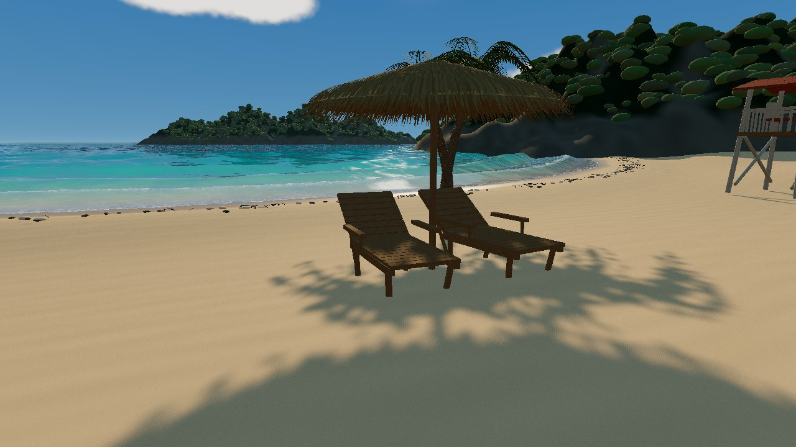
有 Tripo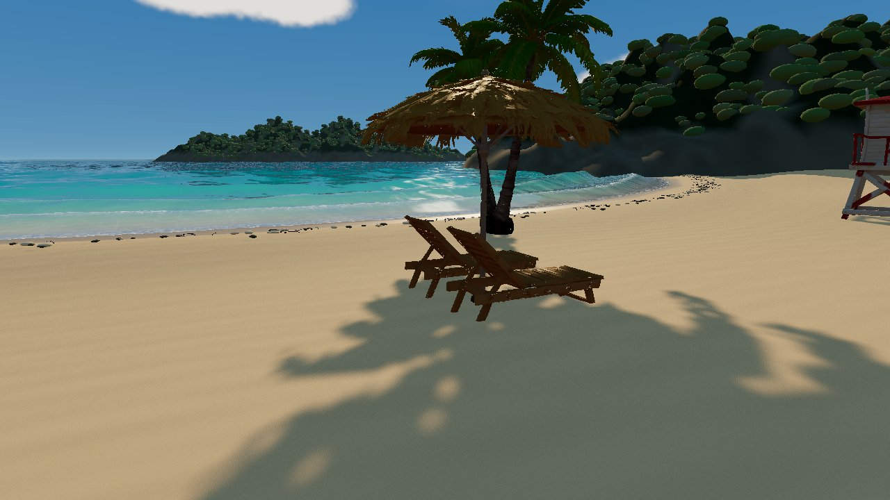
同一個海灘場景，只換 8 件物件的來源
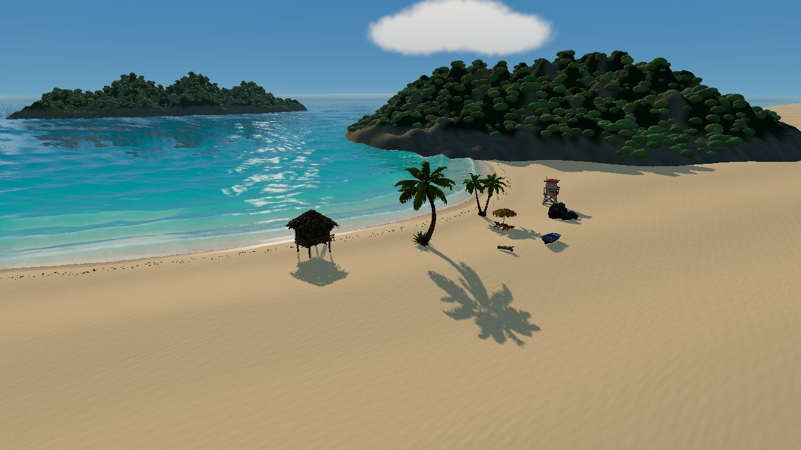
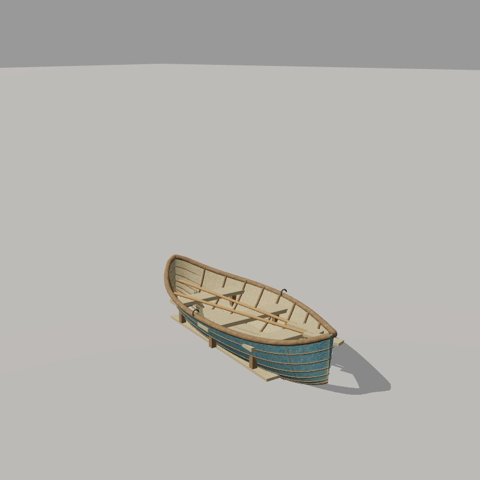
AI 寫程式
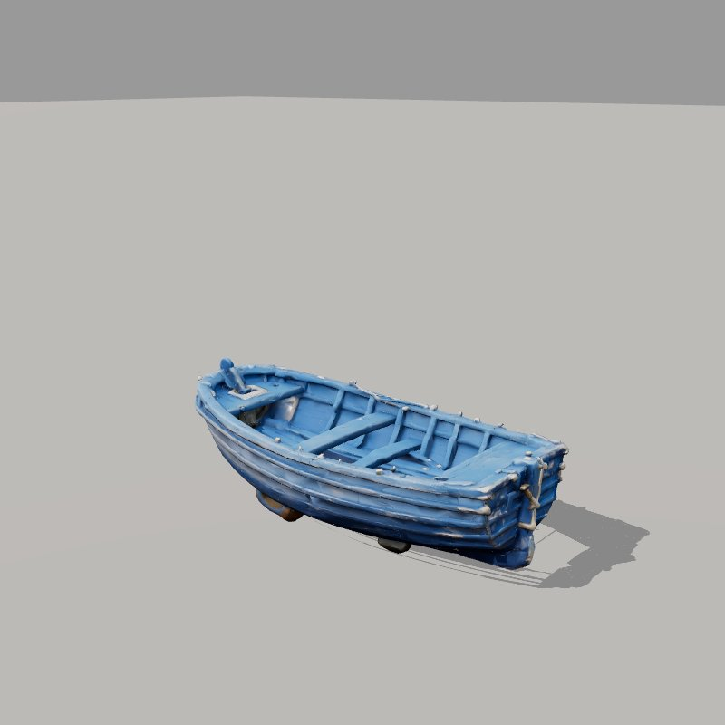
Tripo 生成
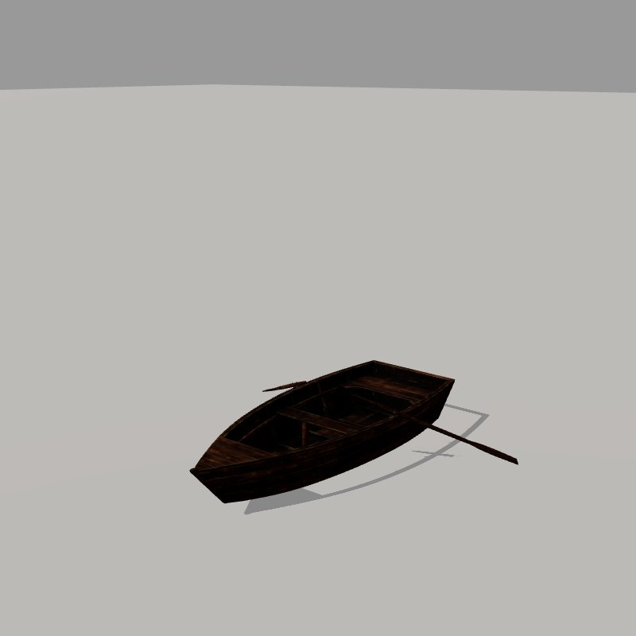
免費素材庫
8 件物件共用同一份需求；水、天空、沙灘、光線完全相同。
兩位 AI 評審，匿名盲評
評審：codex、Opus；來源換成代號、每輪輪換順序，各 5 輪取平均。
物件盲評：Tripo 第一，AI 寫程式只差 0.3 分
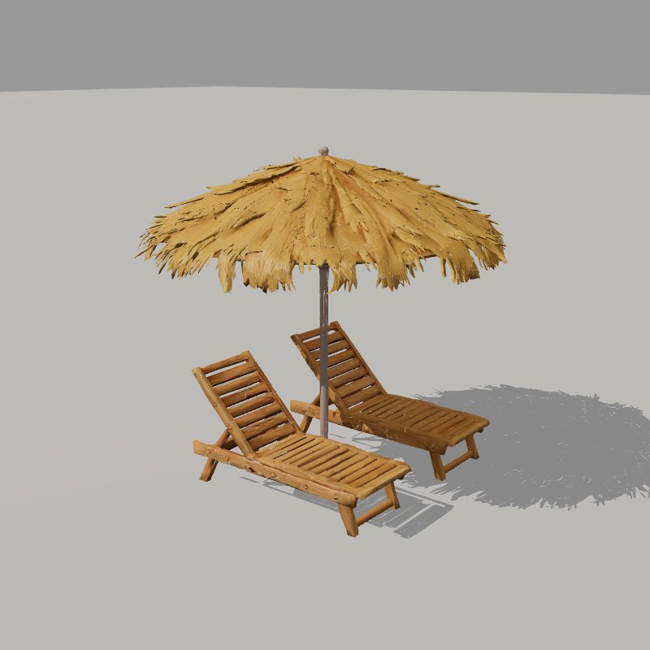
Tripo：草編傘＋躺椅
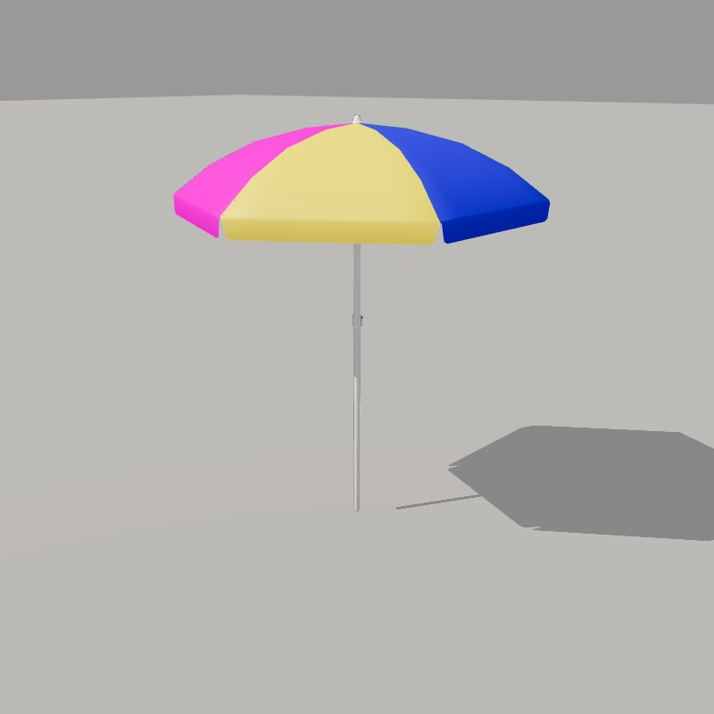
素材庫：彩色布傘
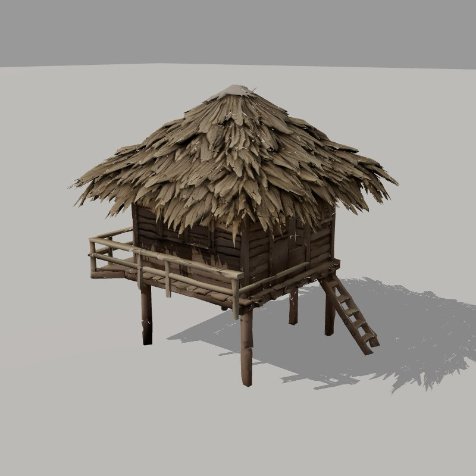
Tripo：茅草高腳屋
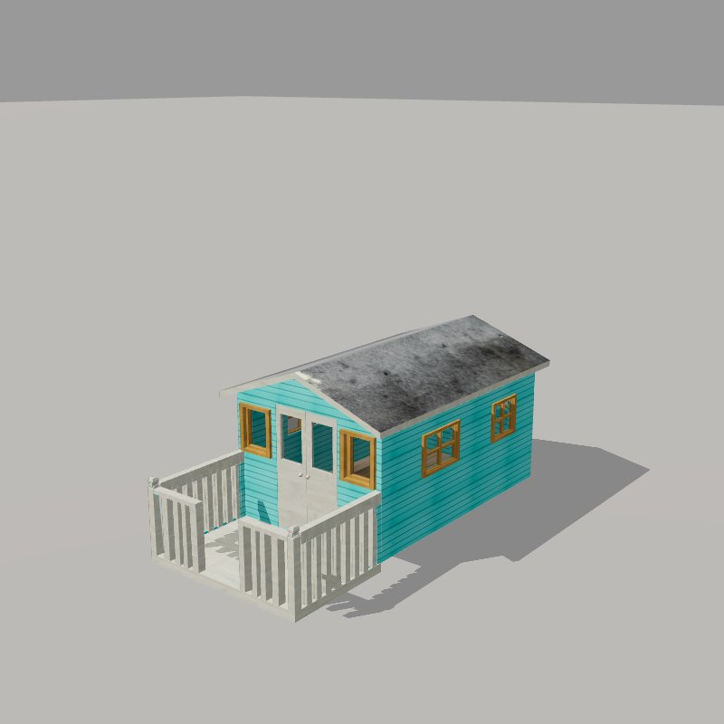
素材庫：木板屋
兩位評審平均（1–10 分）；素材庫低分主因：找不到符合需求的模型；費用為 API 換算（Tripo 為實付點數）
各物件由遠拉近：5 種來源同一鏡頭
每件 4 秒、同一條鏡頭路徑；codex／Opus 版本來自各自的場景（地形與水不同）
場景中的物件：同一路徑飛越（A／B／C）
共用底座只換物件；右下為各物件盲評（codex 評審）
真正拉開差距的，是寫整個場景的 AI
codex（沙箱＋低推理） codex（GPU＋高推理）
codex（GPU＋高推理）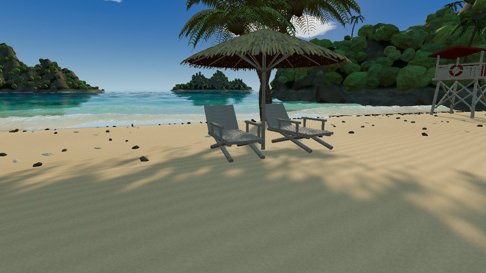
Opus 5.5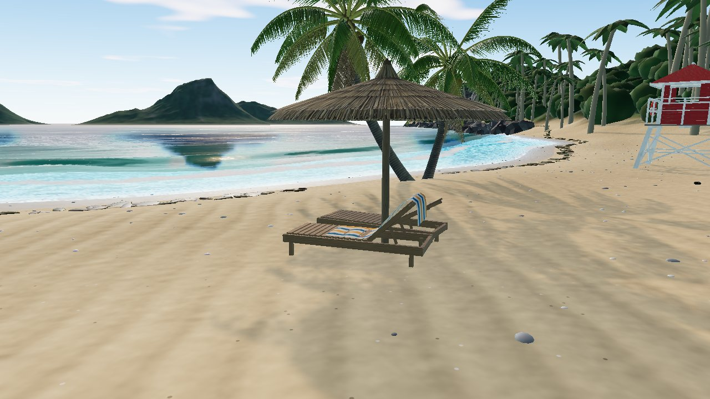
整個場景盲評（codex 評審 3 輪，1–10 分）；API 換算費用：codex 以一般費率計（實際用 fast 跑，費率加倍），Opus 依 claude 回報；實際皆走訂閱額度
水面對照：三種 AI 寫的場景
同一條鏡頭路徑逐格算繪、時間同步；右下為場景盲評（codex 評審）
角色是 Tripo 的強項：3 分鐘生成＋自動綁骨架
codex 寫程式
Tripo（95 點）
素材庫（CC0）
角色在場景中移動：同一段走位
走到陽傘 → 躺上躺椅（素材庫沒有躺椅，改坐沙灘）→ 起身走向救生塔
建議分工
codex寫場景、介面、互動
快 3.6 倍、額度寬裕
Tripo角色、主角物件
約 $0.01／點
Opus最後收尾
品質最高、最慢
免費素材庫只補「有現成且符合需求」的配角。